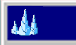
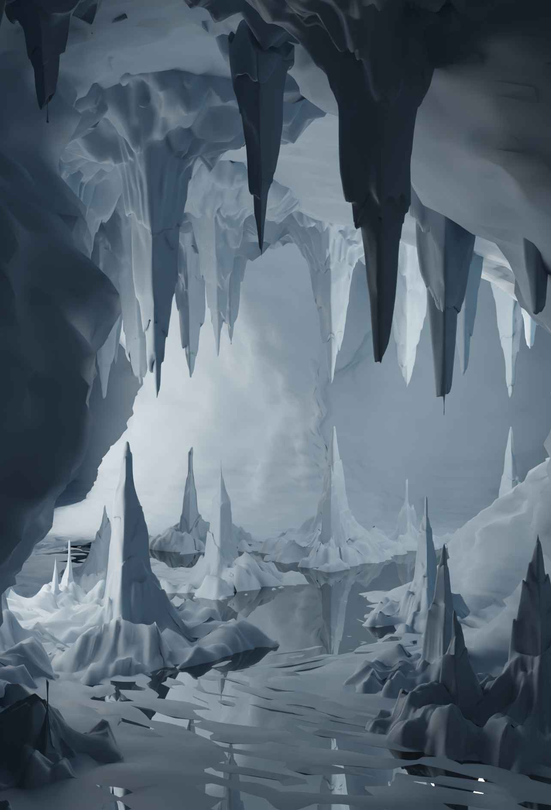
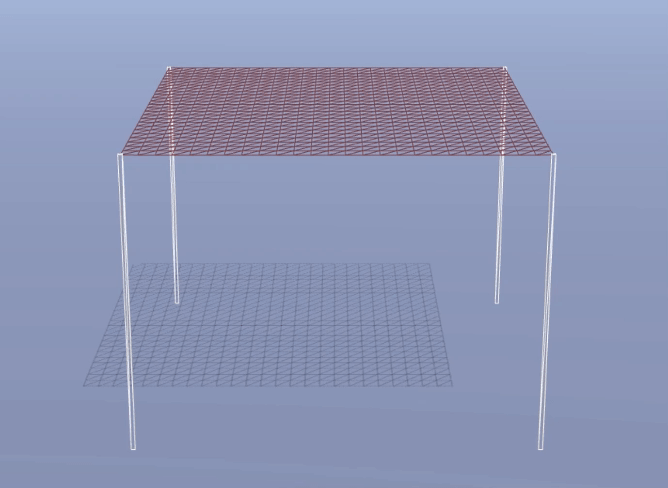
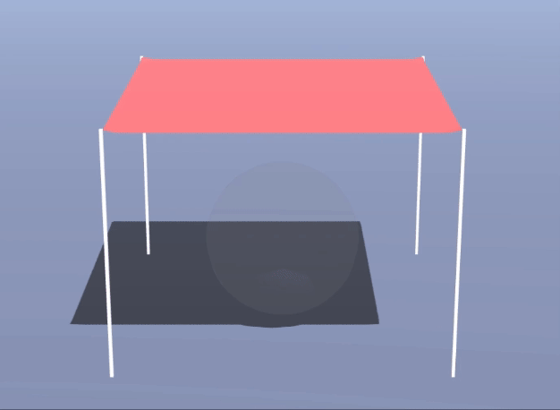
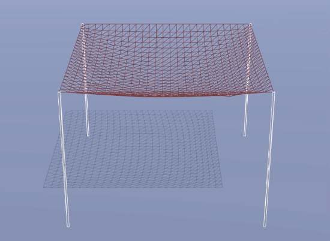
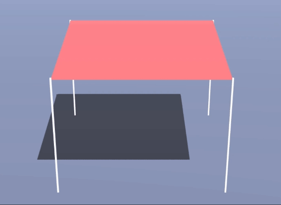
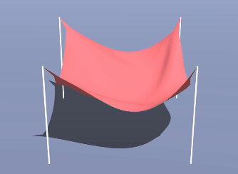

3D Modeling and Graphics
3D MODELING AND GRAPHICS
Program: Blender
Year: Summer 2022
Description: Completed independent project using Blender and Python code.
Working with prof. Adam Finkelstein, I spent my summer creating a realistic icy cavern scene in Blender, a 3D modeling software. I modeled the cave structure by hand, and then used Python to randomly generate stalagmite structures in the cave.

Since I used code to generate a random arrangement of stalagmites, each render is unique.


I have also completed several assignments that involve 3D graphics, including a fabric simulation depicting: gravity, object collision, rain, floor collision, and wind physics.




